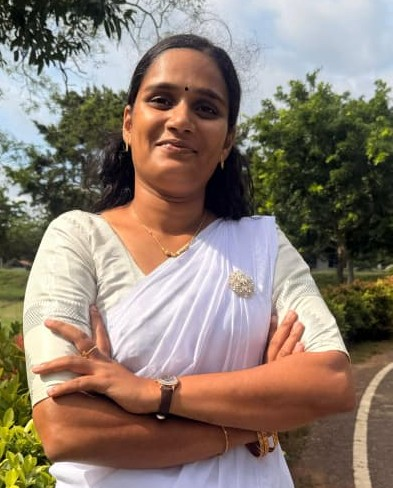

Development
Building interfaces and working with application foundations.
ICT & WEB DEVELOPMENT / JAFFNA, SRI LANKA
Hello, I’m
Bringing ideas to life through thoughtful code, careful testing, and a curiosity for how things work.
NVQ Level 5 ICT candidate · SLGTI, Kilinochchi

01 / THE PERSON BEHIND THE WORK
I’m Varmitha, an ICT student based in Jaffna, Sri Lanka, with hands-on interests in web development, software testing, and networking.
I am pursuing the NVQ Level 5 Diploma in ICT at the Sri Lanka German Training Institute in Kilinochchi, alongside software engineering training at Unicom TIC Education Center. I previously completed NVQ Level 4 ICT Technician training at Jaffna Technical College.
From building an interface to writing a test case or understanding the network beneath it, I enjoy turning what I learn into practical work. My internal audit training at the University of Jaffna also developed my experience with documentation, reporting, and administrative data management.
02 / MY WORKING TOOLKIT
Skills and tools from my learning journey, bringing structure, quality, and creativity to the work.
Building interfaces and working with application foundations.
Thinking through behavior, edge cases, and quality.
Understanding connections and supporting the process.
Teamwork · Communication · Quick learning · Report writing
03 / SELECTED WORK
An education concept with clear learning paths, original illustrations, and responsive, accessible navigation.
A Celsius, Fahrenheit, and Kelvin converter with clear validation, absolute-zero limits, and quick examples.
MORE FROM MY DEVELOPMENT JOURNEY
Read original project descriptionsAn expense tracker with authentication and reporting using HTML, CSS, JavaScript, PHP, and MySQL.
A PHP hotel booking system with an admin dashboard, search and filtering, and booking management.
A diploma project exploring bilingual Tamil/English workflows for local businesses.
An ASP.NET Core 8 coursework API using JWT authentication, EF Core, and SQL Server.
A personal to-do app exploring filtering, local storage, and interface animation.
These project summaries come from my original portfolio. Individual live demos or source links were not supplied there.
04 / A FOUNDATION TO BUILD ON
Education and qualifications listed in my original portfolio.
Sri Lanka German Training Institute (SLGTI), Kilinochchi
Unicom TIC Education Center, Jaffna
Jaffna Technical College
CB Computer Education and College of Technology / CHER
05 / LEARNING THROUGH PRACTICE
Practical training that connects technical learning with clear communication and organized work.
University of Jaffna
Assisted with audit documentation, reporting, and administrative data management.
Unicom TIC Education Center, Jaffna
Ongoing training in software engineering fundamentals and applied development, as listed in my source portfolio.
06 / LET’S MAKE A CONNECTION
I’m open to ICT, web development, and QA opportunities. Let’s talk about a project, an idea, or what comes next.